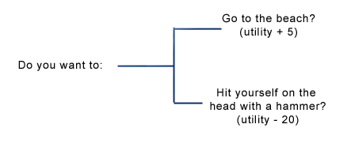
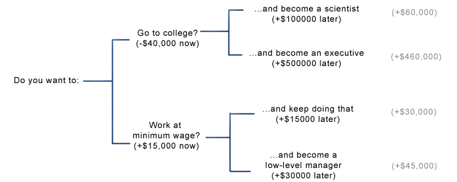
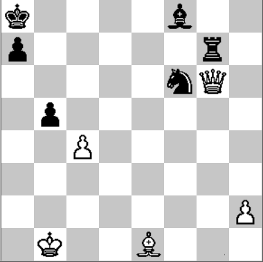
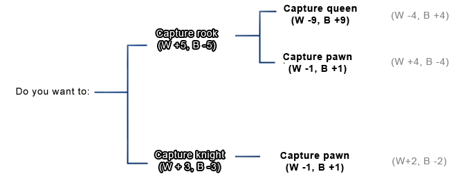
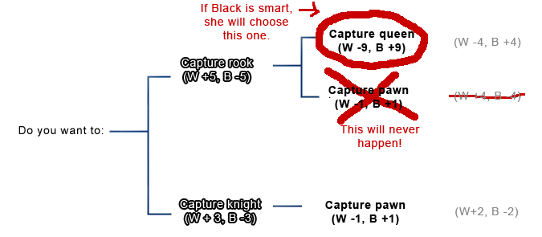
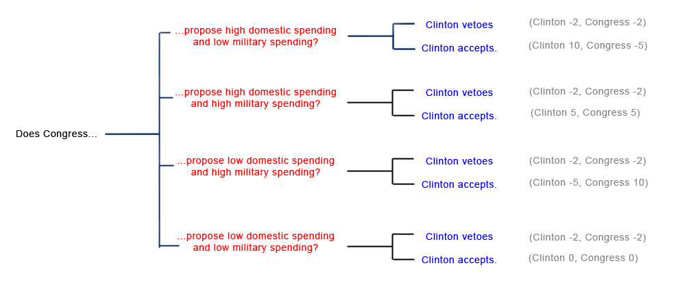
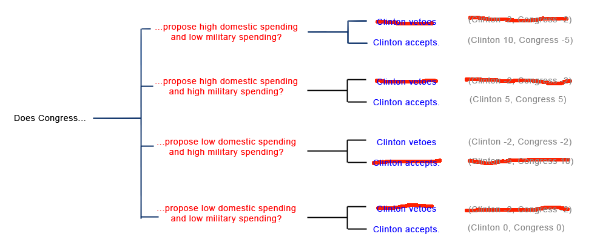
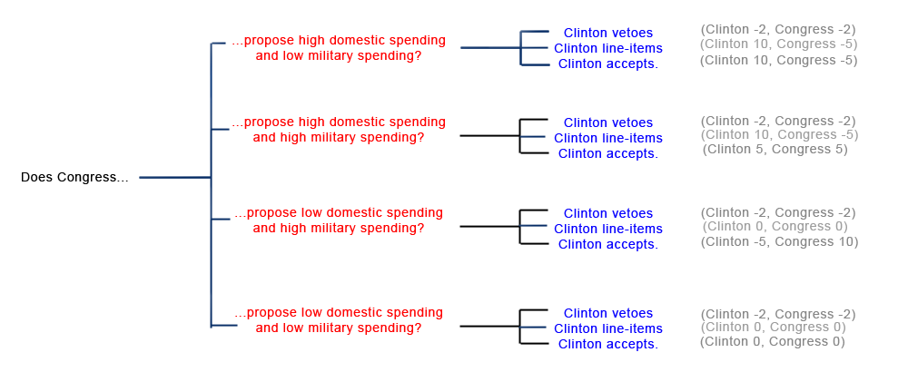
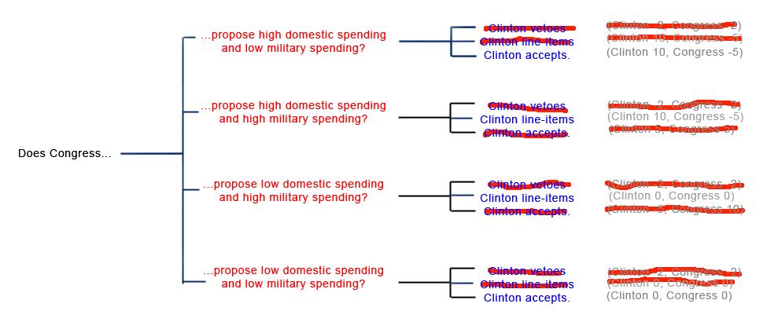

Backward Reasoning Over Decision Trees
Game theory is the study of how rational actors interact to pursue incentives. It starts with the same questionable premises as economics: that everyone behaves rationally, that everyone is purely self-interested1, and that desires can be exactly quantified - and uses them to investigate situations of conflict and cooperation.
Here we will begin with some fairly obvious points about decision trees, but by the end we will have the tools necessary to explain a somewhat surprising finding: that giving a US president the additional power of line-item veto may in many cases make the president less able to enact her policies. Starting at the beginning:
The basic unit of game theory is the choice. Rational agents make choices in order to maximize their utility, which is sort of like a measure of how happy they are. In a one-person game, your choices affect yourself and maybe the natural environment, but nobody else. These are pretty simple to deal with:

Here we visualize a choice as a branching tree. At each branch, we choose the option with higher utility; in this case, going to the beach. Since each outcome leads to new choices, sometimes the decision trees can be longer than this:

Here's a slightly more difficult decision, denominated in money instead of utility. If you want to make as much money as possible, then your first choice - going to college or starting a minimum wage job right Now - seems to favor the more lucrative minimum wage job. But when you take Later into account, college opens up more lucrative future choices, as measured in the gray totals on the right-hand side. This illustrates the important principle of reasoning backward over decision trees. If you reason forward, taking the best option on the first choice and so on, you end up as a low-level manager. To get the real cash, you've got to start at the end - the total on the right - and then examine what choice at each branch will take you there.
This is all about as obvious as, well, not hitting yourself on the head with a hammer, so let's move on to where it really gets interesting: two-player games.

I'm playing White, and it's my move. For simplicity I consider only two options: queen takes knight and queen takes rook. The one chess book I've read values pieces in number of pawns: a knight is worth three pawns, a rook five, a queen nine. So at first glance, it looks like my best move is to take Black's rook. As for Black, I have arbitrarily singled out pawn takes pawn as her preferred move in the current position, but if I play queen takes rook, a new option opens up for her: bishop takes queen. Let's look at the decision tree:

If I foolishly play this two player game the same way I played the one-player go-to-college game, I note that the middle branch has the highest utility for White, so I take the choice that leads there: capture the rook. And then Black plays bishop takes queen, and I am left wailing and gnashing my teeth. What did I do wrong?
I should start by assuming Black will, whenever presented with a choice, take the option with the highest Black utility. Unless Black is stupid, I can cross out any branch that requires Black to play against her own interests. So now the tree looks like this:

The two realistic options are me playing queen takes rook and ending up without a queen and -4 utility, or me playing queen takes knight and ending up with a modest gain of 2 utility.
(my apologies if I've missed some obvious strategic possibility on this particular chessboard; I'm not so good at chess but hopefully the point of the example is clear.)
This method of alternating moves in a branching tree matches both our intuitive thought processes during a chess game (“Okay, if I do this, then Black's going to do this, and then I'd do this, and then...”) and the foundation of some of the algorithms chess computers like Deep Blue use. In fact, it may seem pretty obvious, or even unnecessary. But it can be used to analyze some more complicated games with counterintuitive results.
Art of Strategy describes a debate from 1990s US politics revolving around so-called “line-item veto” power, the ability to veto only one part of a bill. For example, if Congress passed a bill declaring March to be National Game Theory Month and April to be National Branching Tree Awareness Month, the President could veto only the part about April and leave March intact (as politics currently works, the President could only veto or accept the whole bill). During the '90s, President Clinton fought pretty hard for this power, which seems reasonable as it expands his options when dealing with the hostile Republican Congress.
But Dixit and Nalebuff explain that gaining line-item veto powers might hurt a President. How? Branching trees can explain.
Imagine Clinton and the Republican Congress are fighting over a budget. We can think of this as a game of sequential moves, much like chess. On its turn, Congress proposes a budget. On Clinton's turn, he either accepts or rejects the budget. A player “wins” if the budget contains their pet projects. In this game, we start with low domestic and military budgets. Clinton really wants to raise domestic spending (utility +10), and has a minor distaste for raised military spending (utility -5). Congress really wants to raise military spending (utility +10), but has a minor distaste for raised domestic spending (utility -5). The status quo is zero utility for both parties; if neither party can come to an agreement, voters get angry at them and they both lose 2 utility. Here's the tree when Clinton lacks line-item veto:

For any particular Republican choice, Clinton will never respond in a way that does not maximize his utility, so the the Republicans reason backward and arrive at something like this:

If Republicans are perfectly rational agents, they choose the second option, high domestic and high military spending, to give them their highest plausibly obtainable utility of 5.
But what if Clinton has the line-item veto? Now his options look like this:

If the Republicans stick to their previous choice of “high domestic and high military spending”, Clinton line-item vetoes the military spending, and we end up with a situation identical to the first choice: Clinton sitting on a pile of utility, and the Republicans wailing and gnashing their teeth. The Republicans need to come up with a new strategy, and their thought processes, based on Clinton as a utility-maximizer, look like this:

Here Congress's highest utility choice is to propose low domestic spending (it doesn't matter if they give more money to the military or not as this will get line-item vetoed). Let's say they propose low domestic and low military spending, and Clinton accepts. The utilities are (0, 0), and now there is much wailing and gnashing of teeth on both sides (game theorists call this a gnash equilibrium. Maybe you've heard of it.)
But now Clinton has a utility of 0, instead of a utility of 5. Giving him extra options has cost him utility! Why should this happen, and shouldn't he be able to avoid it?
This happened because Clinton's new abilities affect not only his own choices, but those of his opponents (compare Schelling: Strategies of Conflict). He may be able to deal with this if he can make the Republicans trust him.
In summary, simple sequential games can often be explored by reasoning backwards over decision trees representing the choices of the players involved. The next post will discuss simultaneous games and the concept of a Nash equilibrium.
Footnotes:
1: Game theory requires self-interest in that all players' are driven solely by their desire to maximize their own payoff in the game currently being played without regard to the welfare of other players or any external standard of fairness. However, it can also be used to describe the behavior of altruistic agents so long as their altruistic concerns are represented in the evaluation of their payoff.
 Subscribe to RSS Feed
Subscribe to RSS Feed
>We observe that politicians are happy to cut taxes (for people who can benefit them) if they personally get paid as much or more than before. Why would it be otherwise? Having the ability to take and redistribute someone else's money provides a concentrated benefit to the one doing the taking and redistributing. Cutting taxes produces a much more diffuse benefit. Concentrated benefits lead to Machiavellian behavior much more than diffuse benefits. It is possible, of course, to have an anti-taxes lobbying group which provides a concentrated benefit, but the overall balance between concentrated and diffuse benefits is on the side of the higher taxes. >(And any long-term interest, eg power for their family, should take the state of their civilization into account.) That would be a diffuse cost. The politician may care about the portion of the diffuse effectthat affects his family, but that's only a small portion of the total. If the politician makes policy based on which costs help him and his family and which ones hurt him and his family, the concentrated ones will win. The ones that affect all civilization, a small portion of which he actually cares about because it goes to his family, will lose.
by Jiro on Argument Screens Off Authority | 0 points